Queries can be performed on an OLE DB compliant database to produce a sub-set of data, which comply with the specified requirements of the query. This is useful to create different views or sets of the data, so that the displayed data can be uniquely adapted to the need.
OLE DB is an open standard for accessing data from a variety of sources – both relational and non-relational data. An OLE DB datasource exposes the data contained within an OLE DB compliant database or data store as fields within one or more tables.
IMPORTANT: The
Queries can only be added once an OLE DB datasource is required for the required OLE DB compliant database.
The criteria of these queries can also be parameterised, so that results produced by the query can vary dynamically, depending upon the specified values of the parameters.
Adding a parameterised user query to an OLE DB datasource
Once a query has been created, a graphic from can be designed to execute the query and display its results by means of a DataGrid control and if necessary, specify the values of any parameters of the query.
Designing the graphic form to configure, execute and display the query
Since the data obtained by a query is not updated automatically, it only remains as current as the last time that it was executed. To this end, a Special Function spider can be used to execute the user query so that its retrieved data remains up to date. In addition, this spider exposes any parameters that are specified for this query, so that their values can be specified.
Using a Special Function spider to configure and execute the user query
It is also possible to ensure that the users of this graphic form are indeed able to configure, execute and view the data returned by this query, by previewing this graphic form.
Previewing the user query in the OLE DB datasource on the DataGrid
An OLE DB datasource must be added before the data within an OLE DB compliant database can be exposed to the clients (Designer and/or Operator) of the Server.
The Add Datasource configuration dialog is displayed, listing the available datasource plugins.
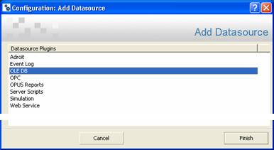
Figure 1: Add Datasource configuration dialog
The Add An OLE DB Datasource configuration dialog is displayed to configure this OLE DB datasource.
This will display the Data Link Properties dialog.
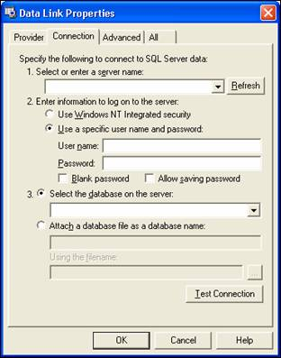
Figure 2: Data Link Properties dialog
In this example we connect to the NorthWind Database which is provided by SQL Server.
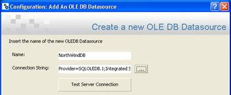
Figure 3: Connecting to the NorthWind SQL database
This will add this specified OLE DB datasource to the Datasources category in the Enterprise Manager, which is identified by its specified name or icon.
Once an OLE DB datasource is added, the data within its OLE DB compliant database exposes the data contained or data store as fields within one or more tables.
User-defined queries can be added to produce a sub-set of these fields, which comply with the specified requirements of the query. This is useful to create different views or sets of the data, so that the displayed data can be uniquely adapted to the need.
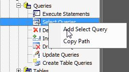
Figure 4: Adding a Select query
The Add Select Query configuration dialog is displayed, which apart from specifying the name of the query also allows the method by which this query is to be created to be selected.
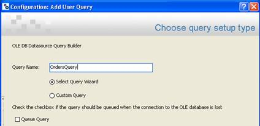
Figure 5: Add Select Query configuration dialog
However at the end of this configuration dialog you are also presented with the same window that is displayed by the Custom Query option that allows you to type in any other SQL query commands that you may require. In this case we are going to use the Select Query configuration dialog to create our user query.
In this case, ensure that the default option, entitled Select Query configuration dialog, is selected.
This lists the tables and fields within this OLE DB datasource within the Tables and Fields tree.
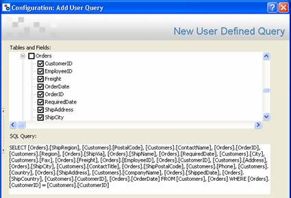
Figure 6: Selecting tables and fields to be included in the query
In this case, all the fields belonging to the Customers and Orders tables are selected.
Each relationship is defined between any two fields that have been selected to be queried by this query. If the values, of these two fields, do not comply with the specified relationship, then this row of values will not be returned by the query.
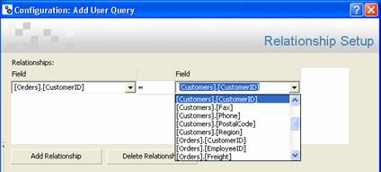
Figure 7: Creating a relationship between two queried fields
This list only displays the fields that have been selected to be queried by this query, in the following syntax: [Tablename].[Fieldname].
As you define the relationship(s), the appropriate SQL query commands are added to the SQL Query field (this cannot be edited in this dialog).
For this example, a relationship between the CustomerID field of the Order table and the CustomerID field of the Customer table is added.
Each constraint is actually a requirement that must be met by the value of a field that have been selected to be queried by this query. If the value of this field does not comply with the specified requirement, then this row of values will not be returned by the query.
Note: This is where parameters can be used!
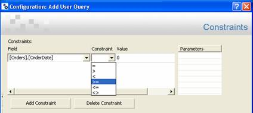
Figure 8: Adding a constraint
This list only displays the fields that have been selected to be queried by this query, in the following syntax: [Tablename].[Fieldname].
This operator defines how the selected Field is to relate to the specified Value.
Or: right-click the Value field and select the type of placeholder which can be used to dynamically specify this value instead, as follows:
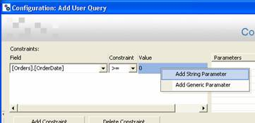
Figure 9: Parameterising a constraint
Add String Parameter: this can be used for string values and adheres to the following format: '<!!param!!>'.
Add Generic Parameter: this can be used for any other values and adheres to the following format: <!!param!!>.
To edit this parameter, click within the Value field. As you define the constraint(s), the appropriate SQL query commands are added to the SQL Query field, which cannot be edited.
For this example two constraints on the Order OrderDate field of the Order table are created, which are constrained by string parameters as follows: [Orders].[OrderDate] >= <!!param!!> and [Orders].[OrderDate] <= <!!param1!!>.
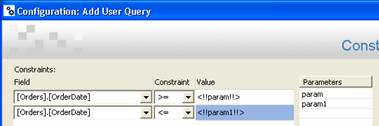
Figure 10: Configured parameterised constraints
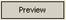
), at the bottom of this dialog, to preview the results of this user query.When previewing queries containing parameters, a dialog box is displayed for each parameter, allowing you to provide a temporary value for them.
In this case, the following dialogs are displayed:
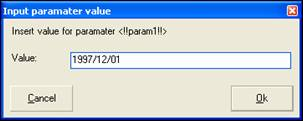
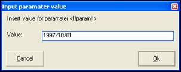
Figure 11: Input parameter values required to preview query
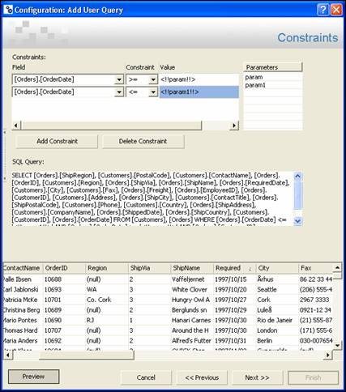
Figure 12: Previewing the results returned by the query as currently configured
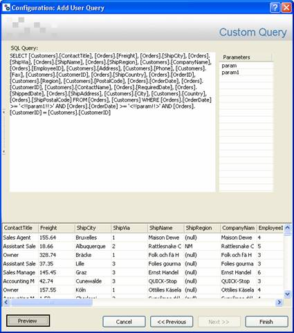
Figure 13: Custom Query dialog
This adds this query with its specified name beneath the Queries folder under this OLE DB datasource, in the Enterprise Manager.
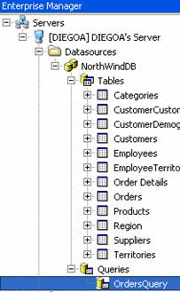
Figure 14: The OrdersQuery added to the Queries folder of the OLE DB DataSource
Since the purpose of a query is to produce a customised view of the data contained within an OLE DB datasource, this will generally need to be displayed to the end user by means of a in a graphic form. In this case a DataGrid control will be used to display the results of the query in the graphic form.
However, in addition to merely displaying the results of the query, the graphic form is also able to allow users to specify the values of the parameters of this query, if any and to execute this query using the specified values for these parameters.
As the OrdersQuery requires two dates as parameters, the following graphic form will be created in this case:
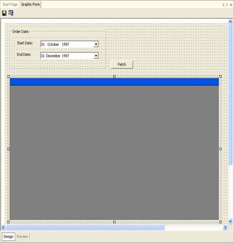
Figure 15: Graphic form used to configure, execute and display the query.
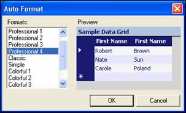
Figure 16: DataGrid Auto Format Dialog with different Auto Format styles
Special Function spiders are able to execute queries that are added to OLE DB datasources. This makes it possible to execute a query from a control that has been added to a graphic form. For this reason, it is necessary to ensure that the results of the query are displayed by the required control.
Furthermore, it is also possible to provide the default values of any parameters specified in the query and if necessary ensure that the required controls are able to specify their values.
In this case, the OrdersQuery will be executed when the btnFetch Button control is clicked and displayed by the DataGrid control, in addition the values (dates) of the two parameters of this query param and param1 will be provided by the two DataTimePicker controls dtpStartDate and dtpEndDate, as follows:
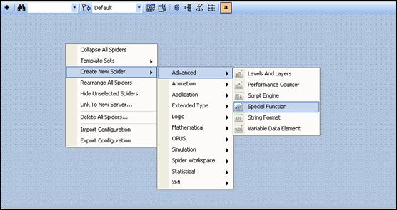
Figure 17: Adding a new Special Function Spider to the Spider Workspace
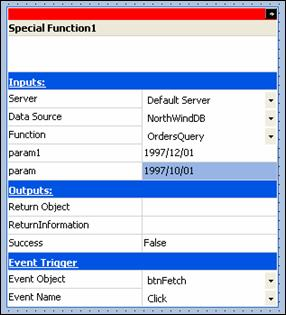
Figure 18: Configuring the Special Function Spider
Now ensure that the DataGrid control displays the results of the query:
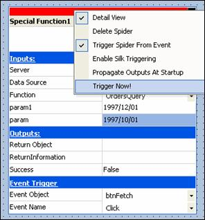
Figure 19: Triggering the Special Function Spider to get the initial DataSet
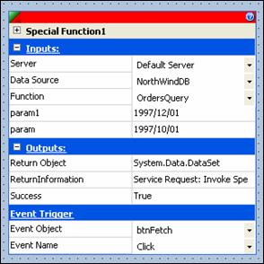
Figure 20: Triggered Special Function Spider containing a Return Object output
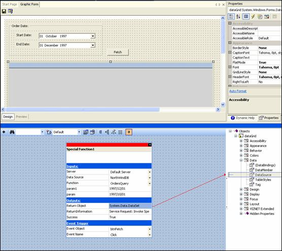
Figure 21: Dragging the Return Object output onto the DataSource property
This will display the Filter DataSet dialog.
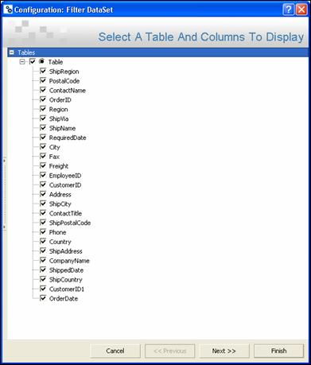
Figure 22: Filter DataSet dialog – Table and Columns selection
In this case, all the columns are required, which is the default option.
Note: The other dialogs of this dialog, allow one to provide extra filtering to this DataSet data and to customise the sorting of this data. However, since these steps are optional and not required for the purposes of this example, they have been skipped.
Now ensure that the dtpStartDate and dtpEndDate DataTimePicker controls can provide the values for the corresponding parameters of this query, namely param and param1:
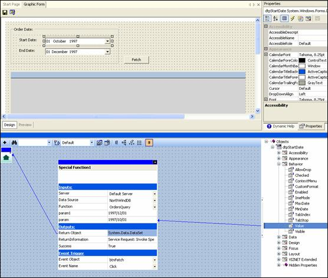
Figure 23: Dragging the Value property of dtpStartDate DateTimePicker onto the param input of the Special Function spider
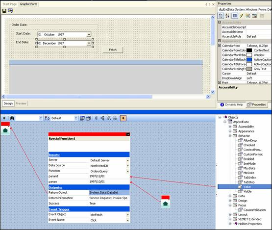
Figure 24 : Dragging the Value property of dtpEndDate DateTimePicker onto the param1 input of the Special Function spider
Now ensure that the correct DateTimePicker event is used to trigger their Value property to update the values of these parameters:
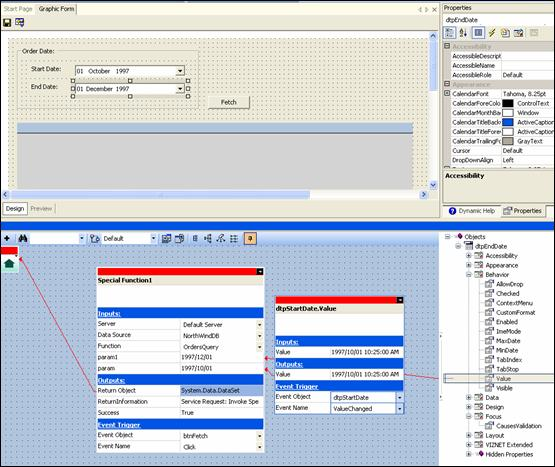
Figure 25: Changing the triggering event of the dtpStartDate DateTimePicker Value property to ValueChanged
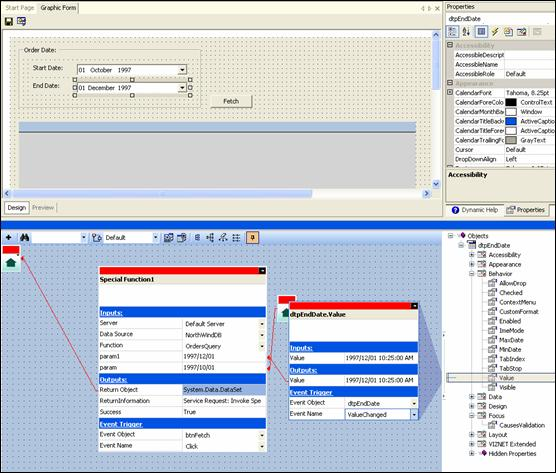
Figure 26: Changing the triggering event of the dtpEndDate DateTimePicker Value property to ValueChanged
It is always good engineering practice to test the correct operation after designing something. In this case, it is necessary to test that users of this graphic form will indeed be able to set the parameters of this user query using the DateTimePicker controls and then execute this query using the Button control and display the results of this query in the DataGrid control.
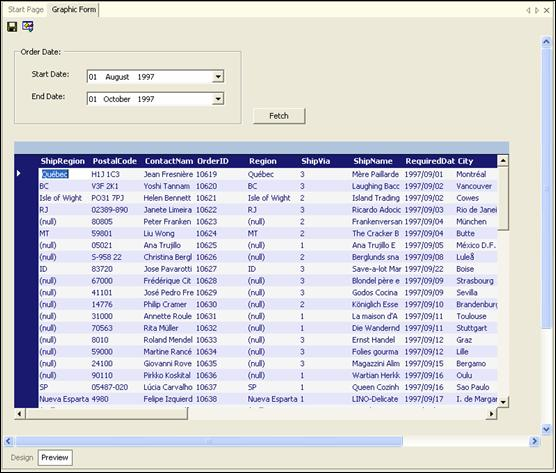
Figure 27: Previewing and testing that this graphic form configures, executes and displays the OrdersQuery user query